漏洞扫描平台
📖 工具简介
一款开箱即用的漏洞扫描平台，无需自行搭建与维护，专为高效安全检测而设计。
平台地址：http://124.220.59.145:801/login 建议使用前简单阅读下属功能。尤其是扫描功能按钮：部分
✨ 核心特性
- 敏捷迭代：每周更新漏洞库和指纹，最快可实现天级更新
- 极速扫描：100个IP资产全端口+漏洞验证，5分钟出结果
- 丰富资源：漏洞库约900个，指纹库约9K个
- 持续成长：随着用户增多，漏洞库和指纹库将更加强大
👥 适用人群
- 小厂红队：快速扫描资产漏洞
- 公司企业：资产梳理，护网前夕历史漏洞排查
🔐 前置界面
1.1 登录
输入账号密码，回车即可登录
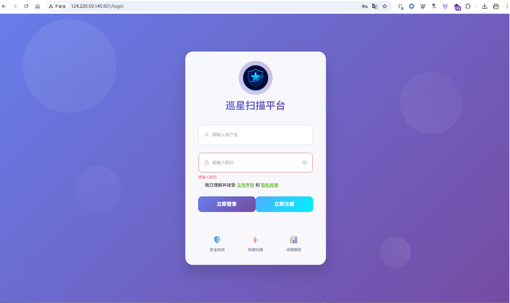
1.2 注册
注册需要CDK，获取方式： - 提供未存入的POC - 提供优质未存入指纹 - 提交平台高危漏洞或bug - 加入纷传或联系我购买
注册步骤： 1. 点击“验证CDK”、
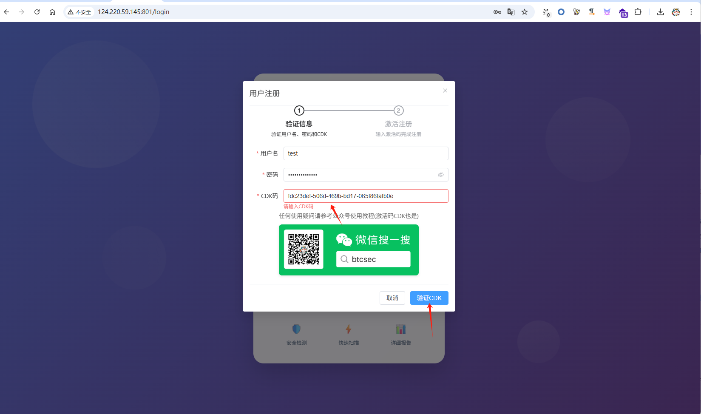
- 关注公众号并发送校验码
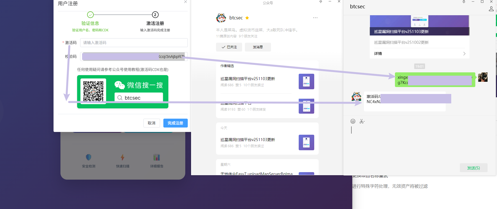
- 完成注册登录
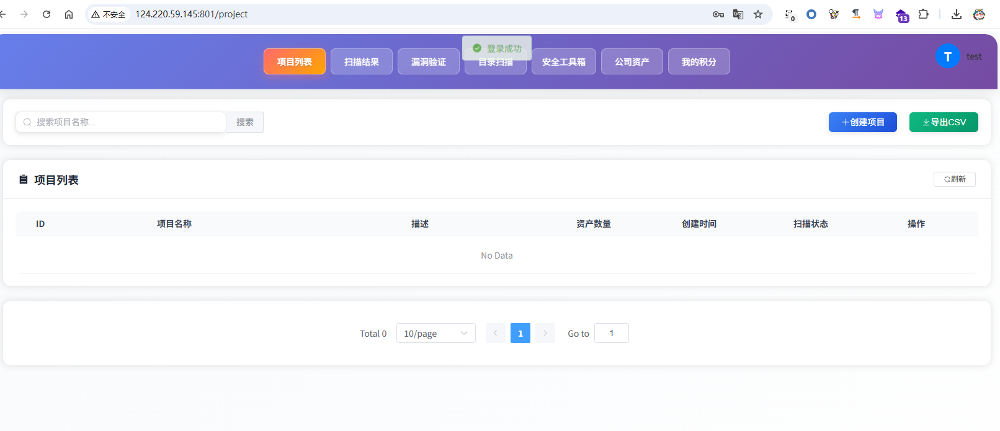
📊 项目界面
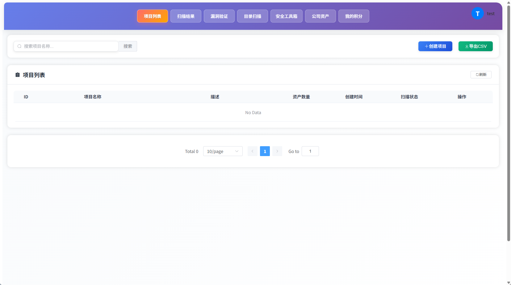
2.1 创建项目
-
输入项目名称和资产列表
-
资产支持：公司、IP、域名等（自动解析分类）
-
如创建失败，请更换项目名称重试
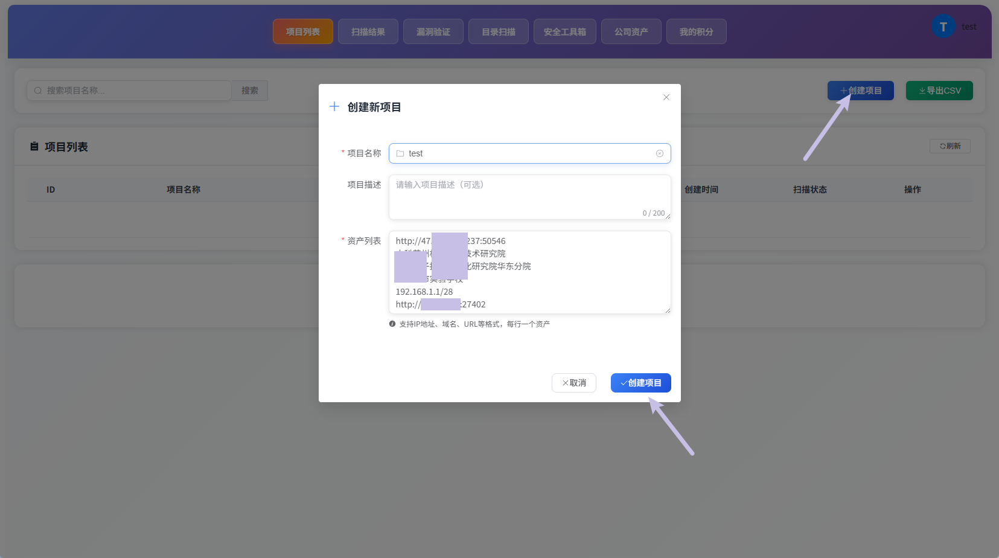
💡 提示：资产会进行特殊字符处理，无效资产将被过滤。会自动将Url里的ip或者域名添加到资产列表中
2.2 查看项目
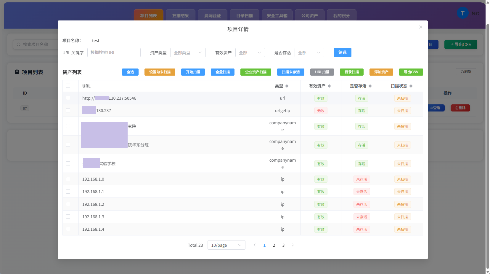
点击“查看”按钮进入项目详情
重要说明： - 扫描状态为“已扫描”时，无法再次扫描（目录扫描除外） - 扫描消耗积分：IP消耗2积分，URL消耗1积分，公司扣 消耗1积分。如果使用了全量扫描收集的IP和Domain也是按照前面的进行消耗
扫描功能按钮：
资产类型分为一下几类
- URL：协议://主机:端口
- IP：IP地址
- Domain：就是域名
- companyname：公司或企业单位名称
- urlgetip：从url获取的ip地址
- urlgetdomain：从url获取的domain地址
- companyasset：公司收集的资产一般只包含IP和Domain
| 功能按钮 | 说明 |
|---|---|
| 🎯 开始扫描 | 对非公司资产进行->存活检测->全端口扫描+漏洞扫描 |
| 🔍 全量扫描 | 所有资产->存活检测->全端口扫描+漏洞扫描 同时对公司名称进行ICP查询，然后将域名资产放到quaker中查询。如果ICP没有查询到则直接使用quaker查询。 |
| 🔄 扫描未存活 | 对是否存活资产为未存活的资产从新进行探测扫描。 |
| 🏢 企业资产扫描 | 对公司名称进行ICP查询，然后将域名资产放到quaker中查询。如果ICP没有查询到则直接使用quaker查询。将查询结果插入到数据库中。在公司资产和项目资产中可以查看到。 |
| 🌐 URL扫描 | 仅扫描URL指定端口，其他端口一律不扫描。 |
| ➕ 添加资产 | 增加新的资产。 |
| ⚙️ 设置为未扫描 | 重置扫描状态，配合“扫描未存活”使用。 |
| ✅ 全选 | 仅对“设置为未扫描”生效。 |
| ✅ 目录扫描 | 对扫描后的资产进行目录扫描。 |
🔍 目录扫描
点击目录扫描后等待一段时间可取导航栏目录扫描查看
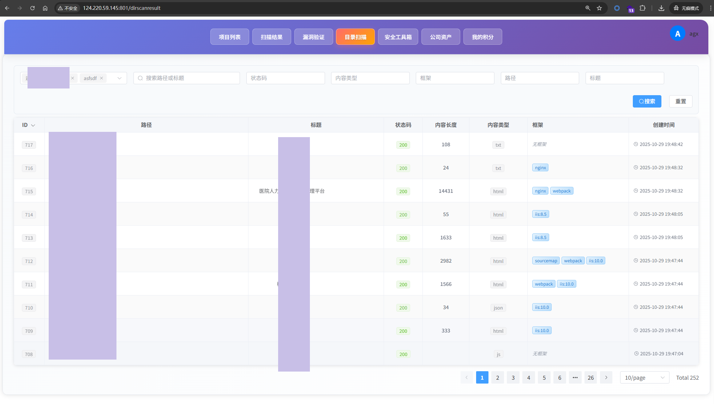
扫描结果中查看
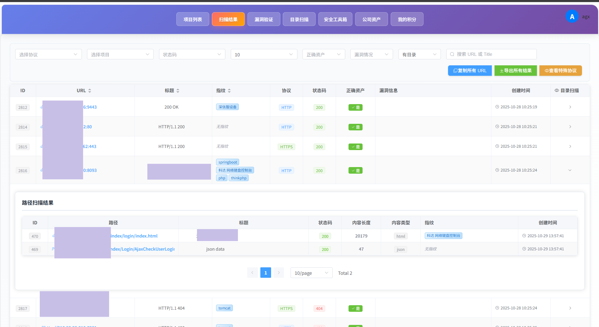
🔍 公司信息收集
当点击全量扫描是开启了icp+quaker的信息收集（不影响正常的ip域名等资产的扫描）因为icp查询+quaker会有点慢具体流程如下，收集出来的资产可以
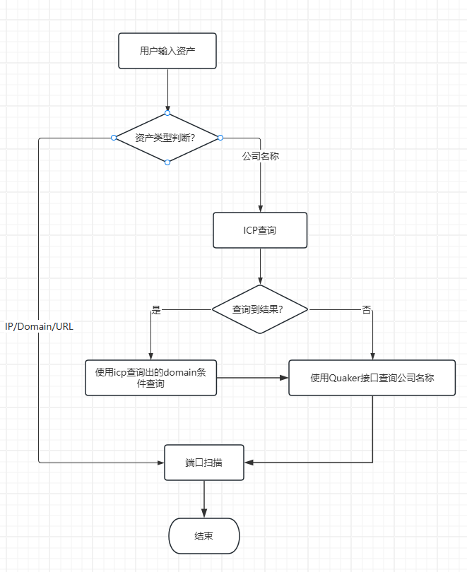
演示：
1、添加资产点击全量扫描。企业收集只到quaker接口查询公司不会进入扫描端口漏洞阶段
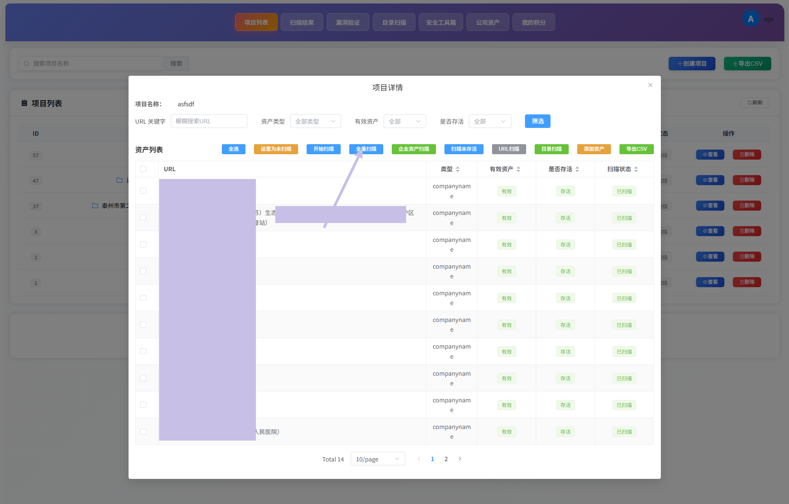
2、之后就等待quaker收集完资产，然后进行端口和漏洞扫描
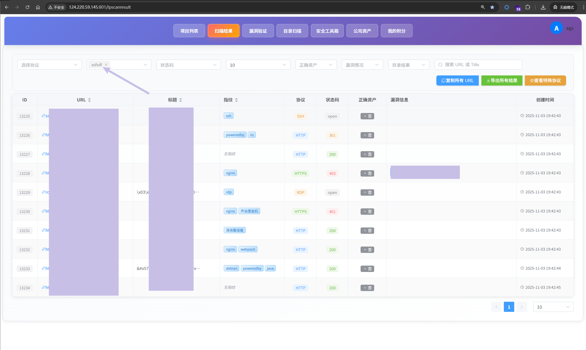
可以点击查看公司资产查看quaker收集的公司资产
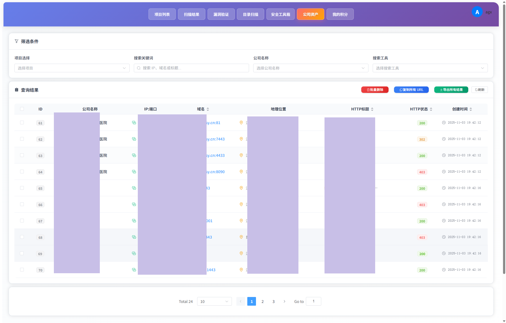
📋 扫描结果
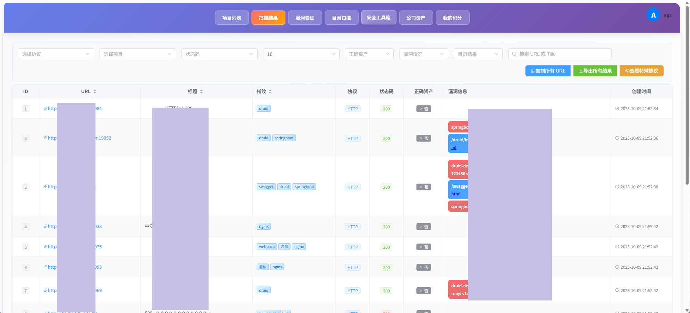
项目筛选
快速筛选对应项目的资产
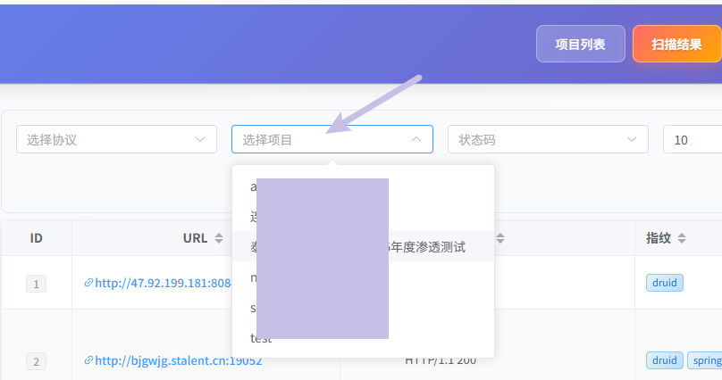
功能操作
- 复制所有URL：复制当前页所有URL
- 导出所有结果：导出筛选后的所有资产为CSV格式。
- 查看特殊协议：查看非HTTP/HTTPS协议，配合弱口令检测。
🐛 漏洞验证
-
快速项目漏洞验证
-
团队成员可提交和查看详情
-
避免漏洞重复提交，提高效率
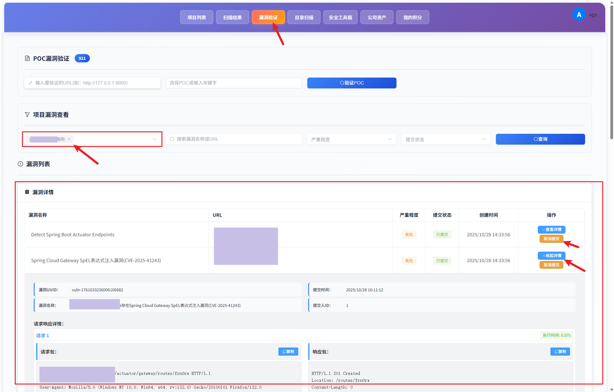
选择项目之后可以查看项目扫描后的所有漏洞信息，包含具体数据包。
POC漏洞验证则是平时对单个目标进行测试使用。
🏢 公司资产
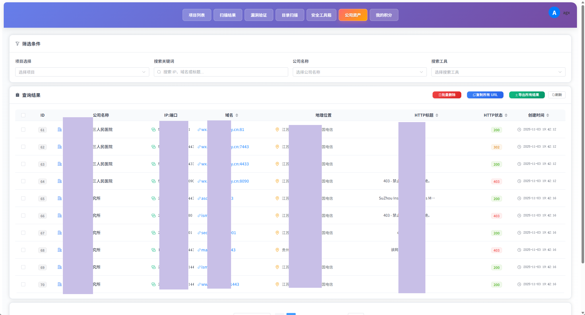
功能详情请见界面说明
📝 安全工具箱
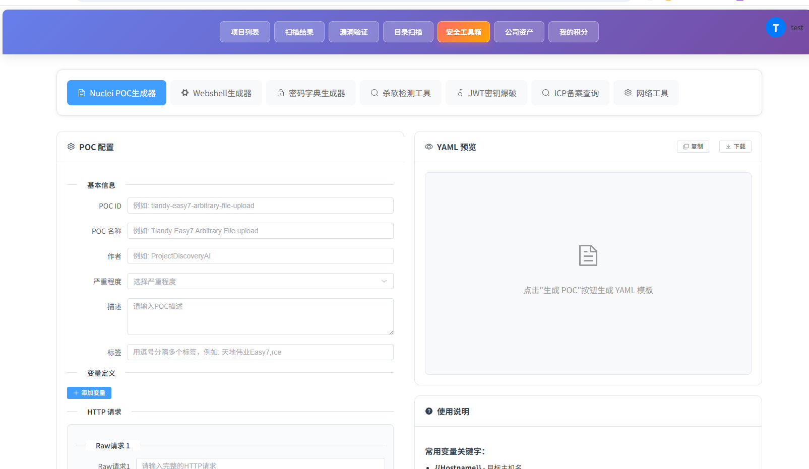
🔑 JWT密钥爆破 - 增强API安全检测能力
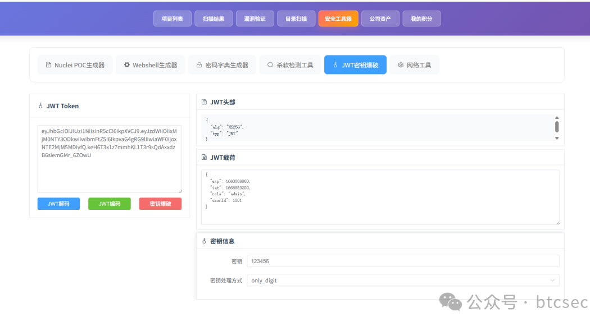
🔑ICP公司查询-鸡肋功能给自己用的。
感谢开源项目https://github.com/HG-ha/ICP_Query，因为要花钱买代理所以需要一个公司需要消耗1积分 。并且查询速度也不快，大概要30s左右。
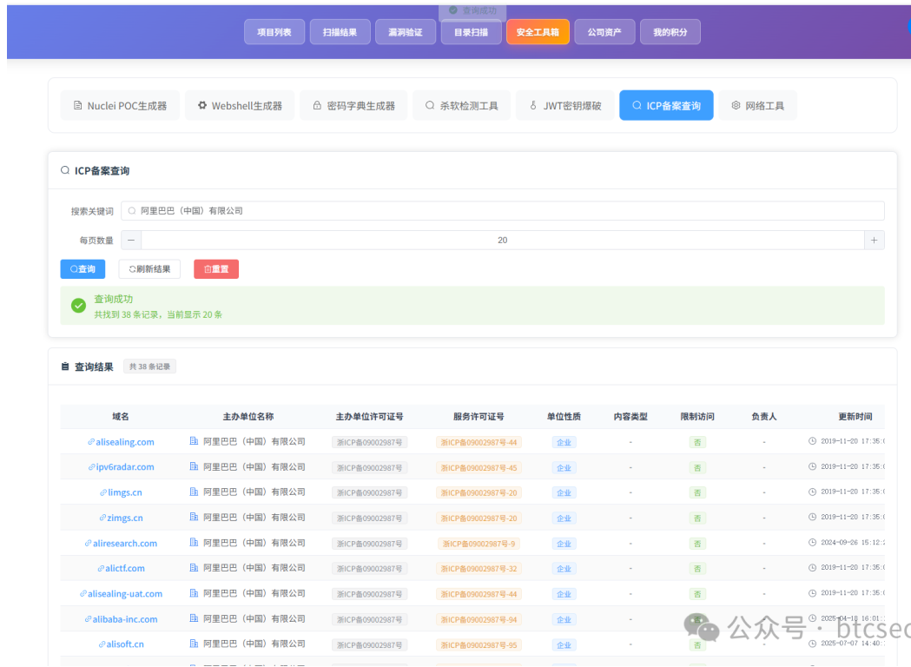
💰 我的积分
我的积分
积分获取方式： - 提供未存入POC - 提供优质指纹 - 提交高危漏洞或平台bug - 加入圈子或者购买
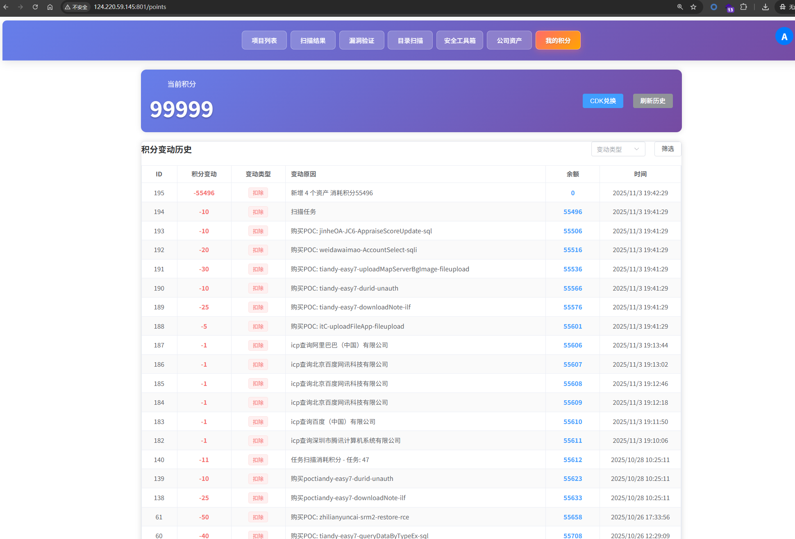
使用CDK兑换积分
个人主页
用户个人信息管理
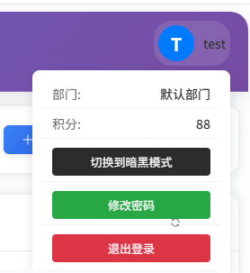
💻联系到我
🌐 访问地址
平台地址： http://124.220.59.145:801/
最后更新：根据提供内容整理 | 平台持续迭代中...